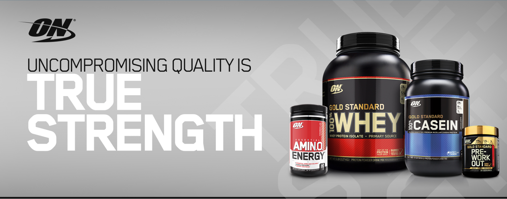

|  |
SUPPLEMENTS ARCHIVEWhat is Taurine: Positive and Negative Effects of TaurineWhen it comes to both health and performance, taurine is one of the most underappreciated essential nutrients in the body – you might be familiar with it as an ingredient in energy drinks or a bodybuilding supplement, but how much do you really know about its effects? Taurine is actually the second most abundant amino acid in the body (the first being glutamine), found in high concentrations in the skeletal muscles and the brain, where it aids the transport of potassium, calcium, sodium and magnesium, which nearly qualifies it as a neurotransmitter. Less stress and better cognitive performanceTaurine facilitates the production of the neurotransmitter GABA, therefore helping the management of anxiety and stress, preventing cortisol and adrenaline spikes. Research shows that low taurine levels lead to an chronically overexcited nervous system which is linked to high cortisol levels and an increase of body fat – taurine aids the process of metabolizing fat which makes it important for achieving a lean physique. This means that taking taurine can help your lower the level of anxiety and lose weight more successfully at the same time |
Melt That Fat With Acetyl L-Carnitine!Acetyl L-Carnitine is one of the essential amino acids that is naturally produced in your body (basically, this is one of the building blocks of your muscles). It is also used by the body for a number of other bio functions and has enormous health benefits as well when taken as a supplement. But one of its most important functions for people who are looking to lose weight is its ability to not only boost your metabolism, meaning you consume energy faster and lose weight faster, but it also increases the rate at which fat is burned in your body, a process known as thermogenesis. Acetyl L-Carnitine is very similar to L-carnitine, with the main difference of an extra component (acetic acid) bound to the core molecule, which makes it more effective than its cousin. How does this amino acid work ?Acetyl L-Carnitine, as one of the essential amino acids, it has a very unique function. It is responsible for carrying fatty acids to your mitochondria to be burned as energy. In other words, the fat that is stored in your body’s adipose tissue is broken down by the thermogenesis outlined above (increased fat burning) and the fatty acids are transported to the cells that build up your muscles. The energy in essence is simply relocated to a much more efficient way of storing it — muscles are far more useful for storing energy than fat is and they can store even more energy — they are more efficient energy stores when compared by weight. How to get shredded with acetyl L-Carnitine ?Your body only makes a limited amount of acetyl L-Carnitine, and this is why it makes good sense to supplement with this as well. There is no disadvantage to having excess amounts of acetyl L-Carnitine in your body, as if there is any excess your kidneys will simply remove it. But what’s for certain is that if you are after building up your muscles and looking great, then using this supplement is one of the best ways to make your cycle more efficient. |